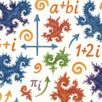

Material und Moodle, ohne Umweg.

MA02.02
MA01.07
MA01.03
MA01.05 und MA02.03 kommen als vierte und fünfte Karte dazu, sobald sie gebaut sind. Gebaut am 20.09.2026 von werkzeuge/startseite.py.
werkzeuge/startseite.py